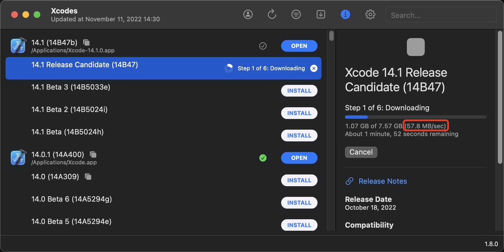
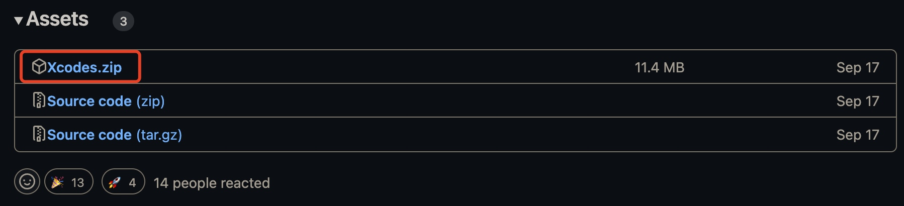
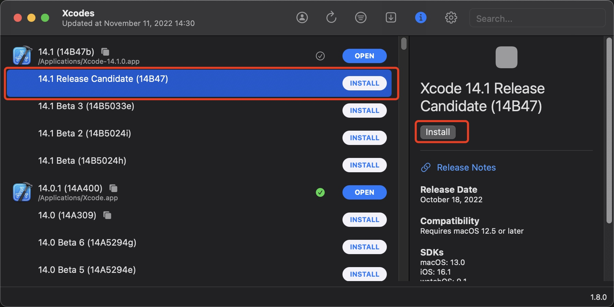
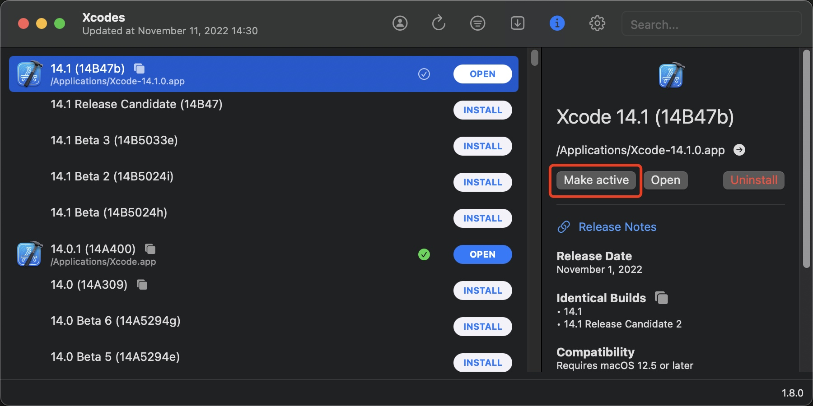
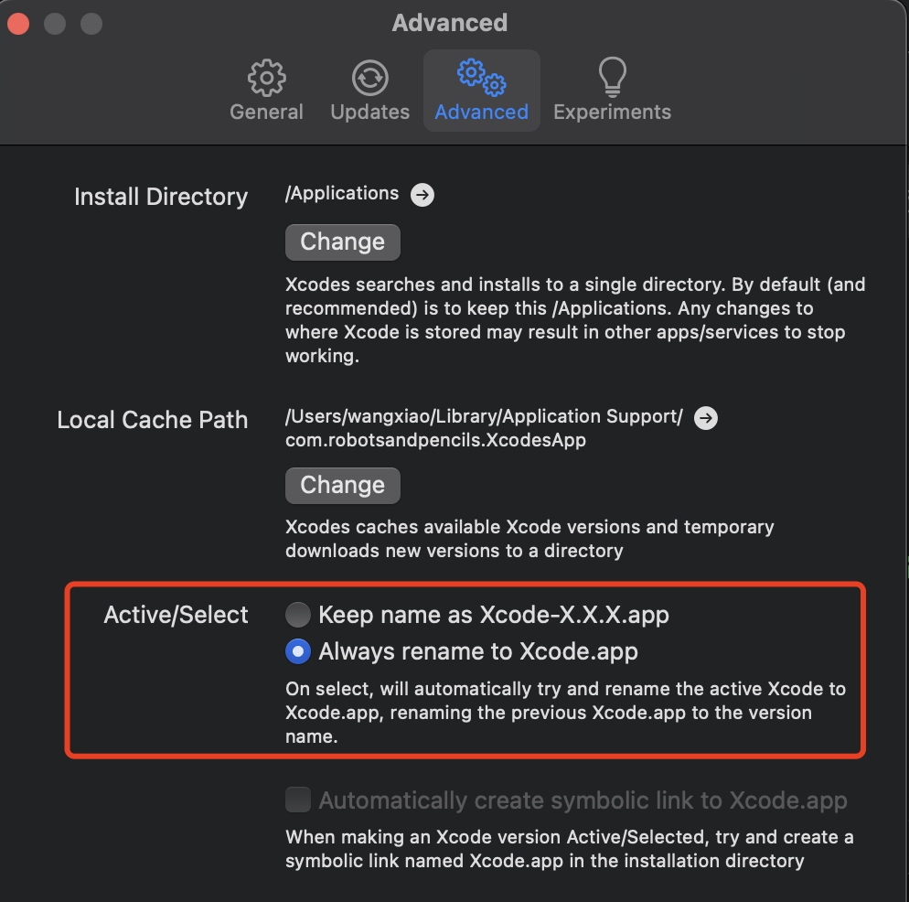
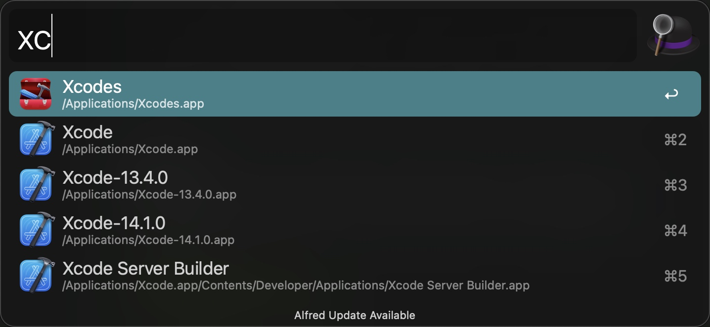

一分钟下载最新 XCode
国内下载和更新 XCode 简直一言难尽，慢的一批。通过 Apple Store 可以下载大半天，通过其他渠道也得几个小时。最近发现了一个小工具，可以占满宽带满速下载 XCode，比如 500M 的宽带，下载速度可以达到 50M Bps 以上。
效果与优势
我家里是 500M 宽带，理论最大下载速度为 62.5M Bps，实际下载速度基本都在 50M Bps 以上，这太恐怖了。

优势：
- 下载速度非常快，最高可以同时开
16个网络连接并行下载。 - 可以同时下载多个版本的
XCode，并一键切换。
项目与使用方式
这个工具是国外一个开源的 Github 仓库，地址为 XcodesApp。可以在这里下载最新的 release 版本。

使用方式也很简单，直接选择想下载的版本，然后点击右侧的 Install 即可。

下载完成后会自动安装，然后点击 Make active 把某个版本作为默认版本，这样诸如 xcodebuild 之类的命令行工具都会用这个版本的 Xcode 的那一份。

使用技巧与采坑
APP 启动时很慢
有时候我们会同时安装多个版本的 XCode，并在多个版本之间切换使用，会出现编译运行 APP 之后一直卡在首页非常久，并且会有下面这个 warning：
warning: libobjc.A.dylib is being read from process memory. This indicates that LLDB could not find the on-disk shared cache for this device. This will likely reduce debugging performance.
解决办法是：
- rm -r ~/Library/Developer/Xcode/iOS\ DeviceSupport
- 重启
XCode
自动更新 XCode 命名
当我们把某个版本的 XCode active 之后，可以设置自动更名为 XCode，并自动把之前旧的 XCode 更名为 XCode-version-xxx。这样我们默认使用的 XCode 一直是最常用的版本，当我们需要使用其他版本的时候再去打开对应的版本即可。


转载请注明出处：一分钟下载最新 XCode - 专业点
欢迎关注我的公众号

推荐

公众号推荐
欢迎关注我的公众号一起愉快的交流。